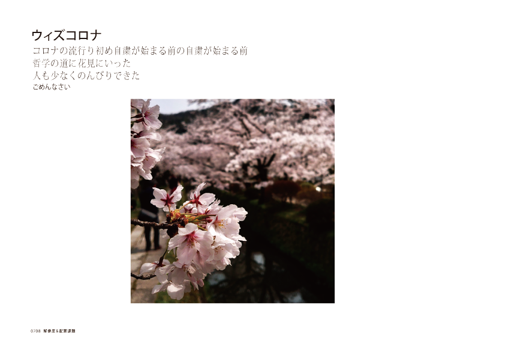
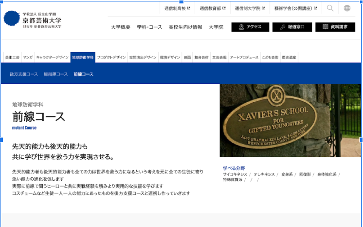
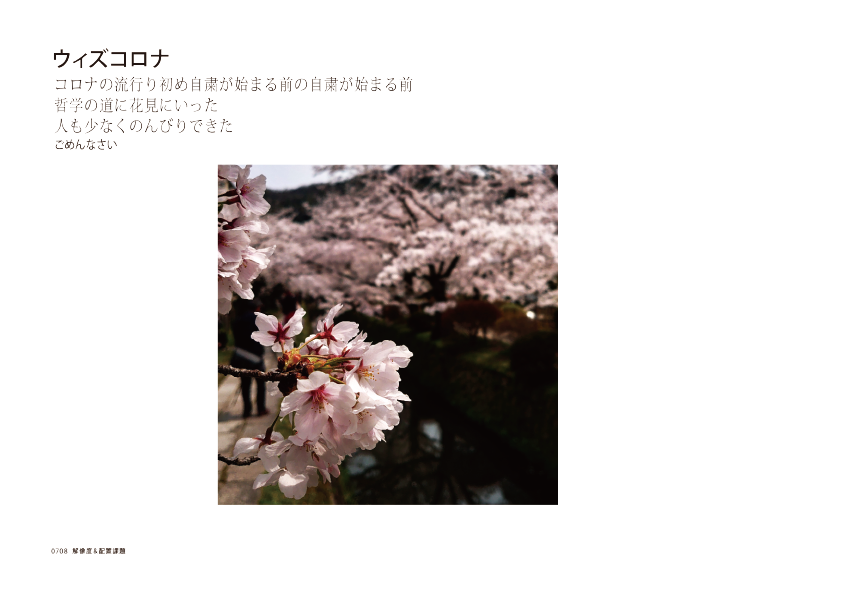
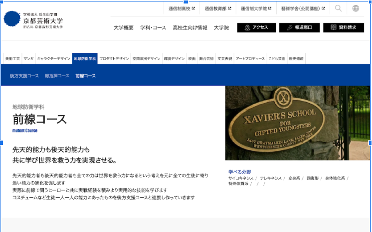

メディアリテラシー基礎
Session:1
名刺の作成

自分の名前は四角が多く動きがないためななめにおいても見た
あっツイッターフォローしてね！
Session:2
解像度の変更と配置
ケータイでこのクォリティの写真は撮れるんです！

- コロナで閑散とした場所で撮ったので余白を出してその雰囲気を出せた
Session:3
webの改変

京都芸術大学のホームページを色々いじってみた
ミュータントの学校があったらこんなホームページなんだと想像した
ケータイでこのクォリティの写真は撮れるんです！


京都芸術大学のホームページを色々いじってみた
ミュータントの学校があったらこんなホームページなんだと想像した